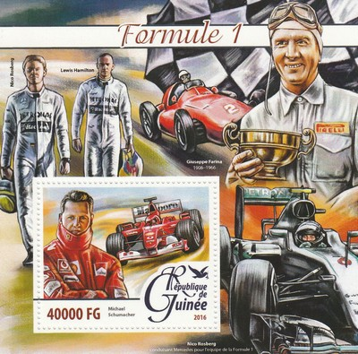

Republic of Guinea
 |
Issue date: 1998 A mini sheet of one value featuring Juan Manuel Fangio from the series 'Events of the 20th Centrury'. Juan Manuel Fangio raced in 1950 to 1958 driving a variety cars - Alfra Romeo, Maserati, Mercedes-Benz and Lancia-Ferrari. He won the drivers' championship five times in 1951, 1954, 1955, 1956, 1957. He is the only Argentine driver to have won the Argentine Grand Prix, having won it four times in his career. Issue date: 2003 A mini sheet of one value featuring Jacques Villeneuve. Following two successful years in CART, Villeneuve moved into F1 in 1996 with the front running Williams team, alongside Damon Hill. In his debut season, Villeneuve challenged Hill for the title, winning four races and taking the fight to the final round in Japan, where the Canadian retired and Hill won the title. Villeneuve, however, did win the following year's title, this time challenging Michael Schumacher and once again taking it to the final round in Jerez. In the race, the two collided, resulting in Schumacher's retirement and subsequent disqualification from the 1997 World Championship, with Villeneuve going on to take third place in the race, and the overall title. The last year in which Villeneuve would win a championship level race and finish the season in the top three was 1997. Renault had pulled out of F1 for 1998 and Villeneuve's Williams team had to fare with less competitive Mecachrome engines. Villeneuve moved to the newly formed British American Racing team in 1999 and stayed there for the next four seasons but, following poor results he was replaced by former British Formula Three Champion Takuma Sato. After a short run with Renault at the end of 2004, Villeneuve moved to the Sauber team for the 2005 season where he was outscored by his less experienced teammate Felipe Massa. The Sauber team were bought out by BMW for the following season and Villeneuve struggled to score points, taking seven points from eleven rounds before suffering an injury in Germany. The Canadian was replaced by Robert Kubica and soon BMW and Villeneuve parted company. Issue date: 2003 A mini sheet of four values featuring: - Jody Scheckter - Scheckter raced in F1 from 1972 to 1980, driving for McLaren, Tyrrell, Walter Wolf Racing and Ferrari - he won the drivers' championship in 1979 in the Ferrari 312T4. - Alan Jones - Jones raced in F1 from 1975 to 1986, driving a variety of cars for various teams, including Williams. In 1980, Jones won the drivers' championship in the FW07B, this also helped Williams win their first constructors' championship. - Nelson Piquet - Piquet raced in F1 from 1978 to 1991, driving a variety of cars for various teams, he won the drivers' title in 1981 in the Brabham BT49C, in 1983 in the Brabham BT52 and in 1987 in the Williams FW11B. - Keke Rosberg - Rosberg raced in F1 from 1978 to 1986, driving a variety of cars for various teams, including Williams. In 1982, Rosberg won the drivers' championship in the FW08, recording only a single win in that season.  Issue date: 2003 A mini sheet of four values featuring: - John Surtees - Surtees raced in F1 from 1960 to 1972, driving for a variety teams - he won the drivers' title in 1964 driving a Ferrari 158 - Denis Hulme - Hulme raced in F1 from 1965 to 1974, driving for Brabham and then McLaren - he won the drivers' title in 1967 driving a Brabham - Jochen Rindt - Rindt raced in F1 from 1964 to 1970, driving for a variety teams - he won the drivers' title in 1970 driving a Lotus - Jackie Stewart - Stewart raced in F1 from 1965 to 1973, driving for a variety teams - he won the drivers' title in 1969 driving a Matra and in 1971 and 173 driving a Tyrrell Issue date: 2006 A mini sheet featuring Michael Schumacher and Fernando Alonso. The 2006 season was dominated by the rivalry between Alonso (Renault) and Schumacher (Ferrari), which resulted in Alonso becoming the youngest double world champion (just beating Schumacher) and Renault winning the constructors' title (just beating Ferrari).  Issue date: 2006 A mini sheet featuring Michael Schumacher and also showing Alain Prost. The 2006 season was dominated by the rivalry between Alonso (Renault) and Schumacher (Ferrari), which resulted in Alonso becoming the youngest double world champion (just beating Schumacher) and Renault winning the constructors' title (just beating Ferrari). Issue date: 2006 A mini sheet featuring Michael Schumacher and also showing Mika Hakkinen. The 2006 season was dominated by the rivalry between Alonso (Renault) and Schumacher (Ferrari), which resulted in Alonso becoming the youngest double world champion (just beating Schumacher) and Renault winning the constructors' title (just beating Ferrari). Issue date: 1998 A single sheet of one value featuring Ayrton Senna - from the Events of the 20th century series.  Issue date: 1998 A commemorative sheet featuring various Ferrari cars, Enzo Ferrari and the following F1 drivers: - Gilles Villeneuve - Juan Manuel Fangio - Michael Schumacher - Alain Prost - Carlos Reutemann - Jose Froilan Gonzalez Issue date: 2002 A set of stamps which feature the following F1 cars: - Ferrari 246 F1 - Lotus 49 - Tyrrell 003  Issue date: 2008 A mini sheet featuring the 2008 Australian Grand Prix, held at the Melbourne Grand Prix Circuit on 16th March 2008. The race was won by Lewis Hamilton (McLaren) from pole position, Nick Heidfeld (BMW Sauber) finished second and Nico Rosberg (Williams) was third - his first ever pole position. The race was noted for its high attrition rate with only seven of the 22 cars running at the chequered flag.  Issue date: 2015 A mini sheet featuring Ayrton Senna. The sheet shows one of the iconic pictures of F1 - four world champions Ayrton Senna, Alain Prost, Nigel Mansell and Nelson Piquet posing before a race, the Portugese Grand Prix at Estoril (21st September 1986).  Issue date: 2015 A commemorative sheet featuring Ayrton Senna. The sheet also depicts two of Senna's closest rivals Alain Prost and Gehard Berger. One of the greatest rivalries in F1 was that of Senna and Prost, which started in 1988 when Senna joined Prost at McLaren and continued until 1993 when Prost signed a contract with Williams that had a clause forbidding Senna from becoming his teammate. Despite the bitter rivalry between Senna and Prost, the two had the utmost respect for one another. This was evidenced by the fact that Prost was a pallbearer at Senna's funeral. Years later Prost would say a part of him died when Senna perished because their rivalry had been so great. Issue date: 2011 A mini sheet of stamps commemorating the 100th Anniversary of the birth of Juan Manuel Fangio.The following drivers are depicted: - Juan Manuel Fangio - Michael Schumacher - Ayrton Senna - Alain Prost Issue date: 2016 A mini sheet of four values featuring the following F1 drivers: - Ayrton Senna - Niki Lauda - Sebastian Vettl - Lewis Hamilton  Issue date: 2016 A mini sheet of one value featuring the following F1 drivers: - Lewis Hamilton - Nico Rosberg - Michael Schumacher - Giuseppe Farina  Issue date: 20th June 2017 A mini sheet of one value featuring the following F1 cars: - Red Bul RB12 - driven in 2016 by Daniel Ricciardo, Daniil Kvyat and Max Verstappen (after his promotion from the Toro Rosso team) - the car used a Renault engine re-badged as a TAG Heuer following the breakdown in the relationship between Red Bull and Renault in 2015, this was the last Red Bull car with fuel and lubricants from Total - ending their eight-year partnership. - Williams FW38 - driven in 2016 by Felipe Massa and Valtteri Bottas - during qualifying for the 2016 European Grand Prix, the FW38 set the highest ever recorded speed of a Formula One car during an official session, at 378 km/h (235 mph). - Manor MRT05 - driven in 2016 by three rookies, reigning Deutsche Tourenwagen Masters champion Pascal Wehrlein, GP2 Series regular Rio Haryanto and reigning GP3 Series champion Esteban Ocon - this was the only car produced by Manor as the team entered administration at the beginning of 2017 and folded in January of that year.  Issue date: 20th June 2017 A mini sheet of four values featurning the following F1 cars: - Mercedes F1 W07 Hybrid - driven in 2016 by Lewis Hamilton and Nico Rosberg - this hugely successful car delivered the Constructors' Championship for Mercedes and the Drivers' Title for Rosberg. - Renault R.S.16 - driven in 2016 by Kevin Magnussen and Jolyon Palmer, this car marked Renault's return to the sport as a constructor after a five-year absence (taking over what was previously the Lotus F1 Team). - Ferrari SF16-H - driven in 2016 by Sebastian Vettel and Kimi Raikkonen, a disappointing season for Ferrari as they did not win a race all season, for the second time in three seasons. - Sauber C35 - driven in 2016 by Marcus Ericsson and Felipe Nasr - the car proved to be less competitive compared to its predecessor due to less development over winter, caused by financial problems of the team. |